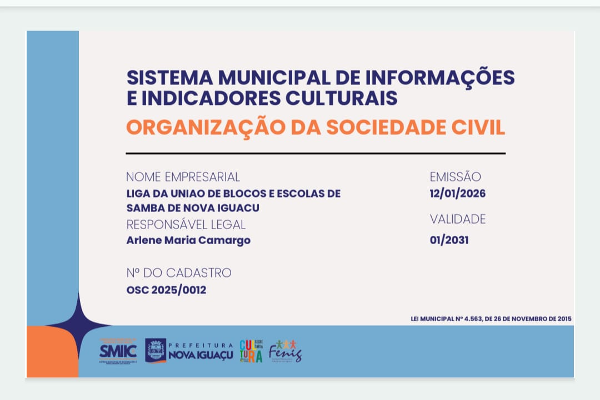

Nome empresarial
O certificado identifica a entidade como "Liga da União de Blocos e Escolas de Samba de Nova Iguaçu", cadastrada como Organização da Sociedade Civil no sistema municipal.
A LUBESNI está formalmente cadastrada como Organização da Sociedade Civil (OSC) no Sistema Municipal de Informações e Indicadores Culturais da Prefeitura de Nova Iguaçu, reforçando sua regularidade institucional junto ao poder público municipal.
Dados extraídos diretamente do certificado emitido pela Secretaria Municipal de Indústria e Comércio (SMIIC), em conjunto com a Prefeitura de Nova Iguaçu.
O certificado identifica a entidade como "Liga da União de Blocos e Escolas de Samba de Nova Iguaçu", cadastrada como Organização da Sociedade Civil no sistema municipal.
Arlene Maria Camargo consta como responsável legal da organização perante o Sistema Municipal de Informações e Indicadores Culturais.
O cadastro tem fundamento na Lei Municipal nº 4.563, de 26 de novembro de 2015, que rege o Sistema Municipal de Informações e Indicadores Culturais de Nova Iguaçu.
O certificado foi emitido em 12/01/2026, com validade até janeiro de 2031, sob o número de cadastro OSC 2025/0012.
Imagem do certificado emitido pela Prefeitura de Nova Iguaçu, com o selo da SMIIC, da Secretaria de Cultura municipal e do Fenig.

Este certificado foi enviado diretamente pela LUBESNI e reproduz um documento oficial emitido pela Prefeitura de Nova Iguaçu. Para uso em editais e parcerias, recomenda-se apresentar este certificado junto ao CNPJ e ao portfólio institucional da Liga.